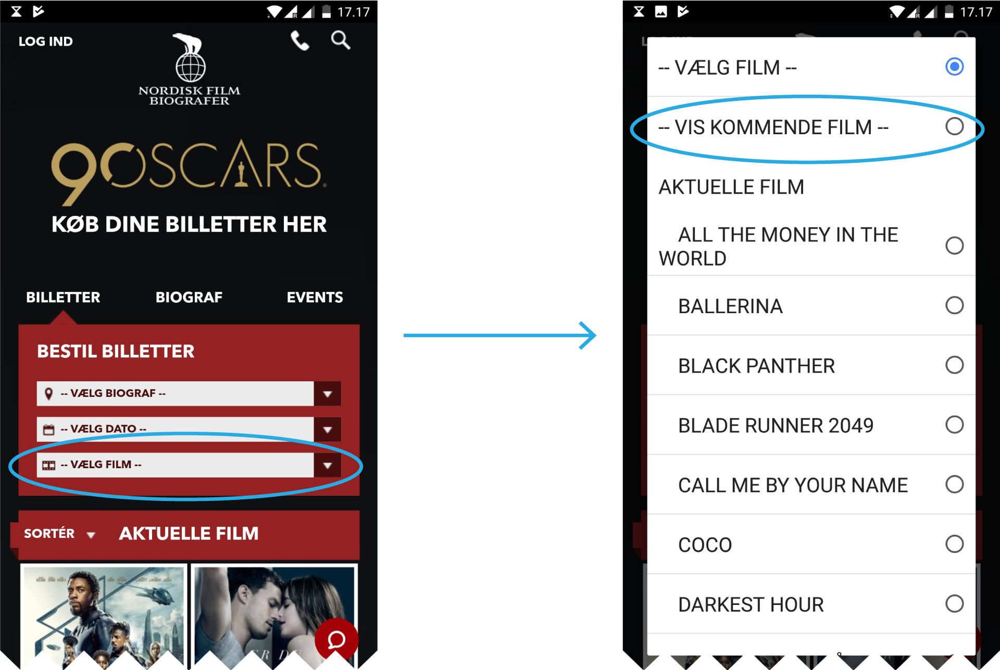

As I reviewed the footage, I took note of the task completion rates of each of the scenarios mentioned earlier. I coded their performances like this:
3: The participant performed the task without any problems.
2: The participant performed the task with minor difficulties.
1: The participant was unable to perform the task.
Each scenario can score up to 12 points (3 points x 4 participants). The closer to 12, the better.
|
Scenario 1: "Which movies are showing on Sunday?" |
Scenario 2: "Reserve three tickets for specific movie" |
Scenario 3: "Which movies are coming out in October?" |
| Participant #1 |
2 |
2 |
1 |
| Participant #2 |
3 |
2 |
N/A |
| Participant #3 |
3 |
2 |
3 |
| Participant #4 |
3 |
3 |
1 |
| Sum |
11/12 |
9/12 |
5/12 |
Even with so few tasks and participants, this served as a good indicator of where to put most of my focus. Using this table as an outset, I arranged the issues that I observed on a priority list, going from high to low priority. Priority is based on how serious the issue is for the user experience, and for the bottom line of the Nordisk Film Biografer.

This is where the case study gets into the nitty-gritty, explaining all of the issues I found relevant and how to solve them. It is the longest section, so I fully expect you to skim it over. If you want to skip straight to the next bit, click here.
1: Ticket buying progress resets after logging in
After specifying movie, date, time and cinema, if the participant was not logged in beforehand, all progress would be lost.
This was the case for all participants. I later checked on several devices and browsers, and the issue persisted.
I judged this issue as the most severe because it happens at the very last stage of the process, and then throws users back to start from square one, with no real explanation as to why. I will strongly argue that this issue has a direct impact on the amount of people who complete the ticketing process.
Edit: This issue has since been fixed on their live website.
2: Upcoming movies are hard to locate
The navigation item that takes users to the “upcoming movies”-page is difficult for the participants to find. One participant searched for 6 minutes and another for 3½ minutes before I stopped them, as I sensed their frustration.
"I just can't find it"
one participant said very plainly, confirming what I had already observed twice before.
Funnily enough, I also failed to locate the item when I was asked to reveal where it was after the test by a participant. It was only later, when I went through my notes, that I was able to find it.
The page is reached by clicking a very ambiguous item in a drop down menu labeled “select movie”. This drop down is the third consecutive drop down in a column, after “choose cinema” and “choose date”.
I asked the single participant that had found it without issue, how she had done it. It turns out, she had taken note of the item during a previous task, and remembered it.
Seeing as the act of checking future releases turned out to be in the top 3 of reported goals in the preliminary research, this needs to be much easier to locate.
A fast and cheap solution to this would be to relocate the menu item, perhaps as one of the tabs at the top of the site.
Problem

- A high level menu item is hidden away under a dropdown menu
- The menu item is not very visually distinct from the rest of the items on the list
- The menu item is grouped with movies, not other menu items
Solution
- Group "upcoming movies" with "events" and put them under a tab called "upcoming", replacing "events"
- The grouping seems more intuitive
- Participants would consistently browse the tabs when searching
If resources are not an issue, the best solution could be determined with an open card sort. This would also likely lead to more intuitive information architecture, overall.
3: The “buy / reserve” dialogue box is ambiguous.
After selecting a movie, a panel about the movie expands (vertically) and elements outside of the panel darken. Good, this draws focus to the foreground elements. Unfortunately, it goes downhill from here. To buy or reserve a ticket, the next step is to select a show time, but the panel is very convoluted, and the show times are not visible until you scroll down. There are 5 different red rectangular buttons screaming for attention, none of which are actually the button that takes them to the next step in the process. If they scroll down, they eventually see the movie show times for every cinema that shows this movie, which can be as many as all 23 of them.
When clicking a time, a dialogue box appears with a single button that says: “buy / reserve”. The dialogue is about 1/9th the size of the screen, and the same background color and hue as the elements behind it.
This entire panel is an issue. Participants scrolled up or down, uncertain if this was the step they should be taking next. There is too much going on, and the design does very little to lead them.

A fast and cheap solve for this is to reduce the amount of buttons and possible actions in the panel, or even to make the second dialogue much larger and more prominent.